Как экспертностьпревратили в контент‑планбез постоянной продажи
Экспертный контент-план о тейпировании, массаже и кинезиофитнесе без постоянного давления продажей.
BORODULINA TAPE10 публикаций в одной системе
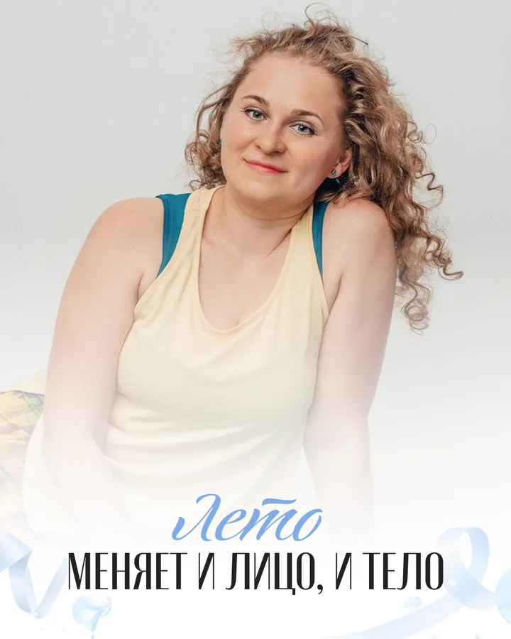
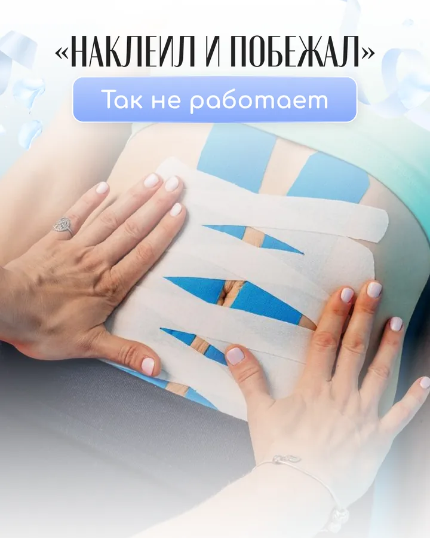

Показать глубину подхода, а не просто перечислить услуги
Привлечь новую аудиторию, показать индивидуальный подход эксперта и последовательно соединить пользу, доверие, вовлечение и одно прямое предложение.
- 01
Зацепить
Начать с понятной ситуации или сильного интереса.
- 02
Объяснить
Разложить сложную тему простым языком.
- 03
Показать
Дать продукт, работу или опыт в конкретике.
- 04
Снять сомнения
Ответить на вопросы до разговора с менеджером.
- 05
Дать следующий шаг
Сделать продолжение простым и уместным.
Не набор макетов, а связный контент-план
Подготовлены и утверждены 10 публикаций: 8 одиночных постов, 2 карусели по 7 слайдов и мини-прогрев из 5 сторис. Публикации запущены в VK по согласованному календарю.
10 публикацийединая логика выпуска
2 карусели14 готовых слайдов
5 сторисдополнительный сценарий внимания
Весь контент-план
Откройте любую публикацию — внутри макет и роль материала.

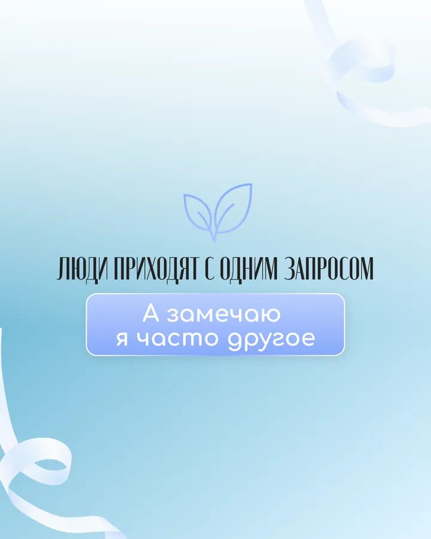
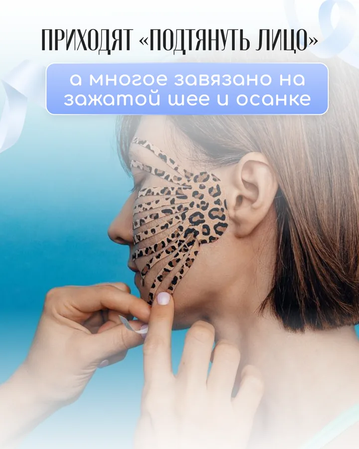
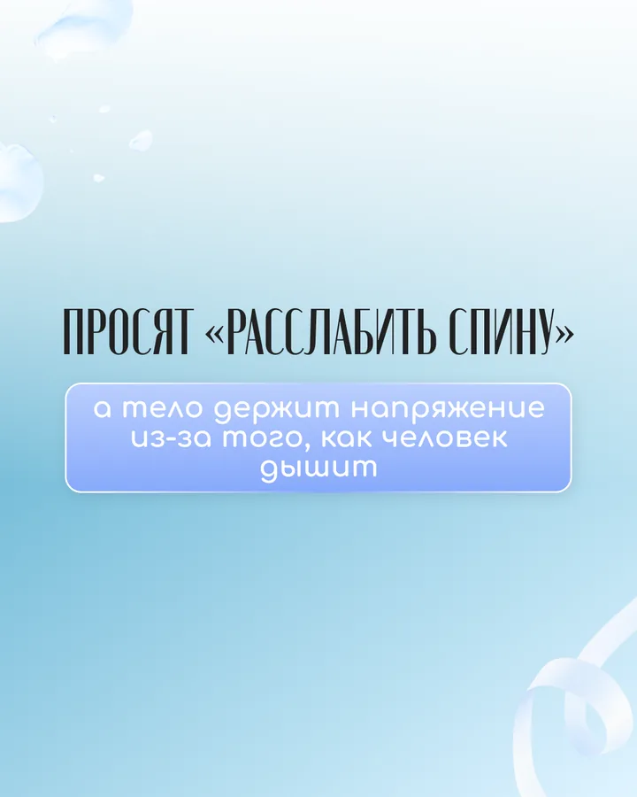
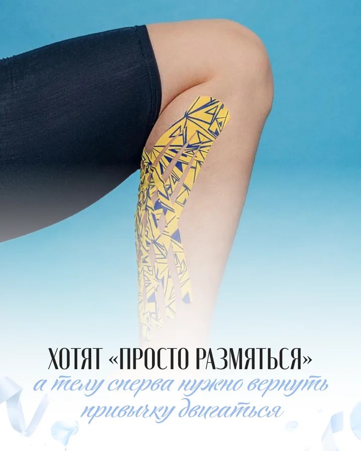
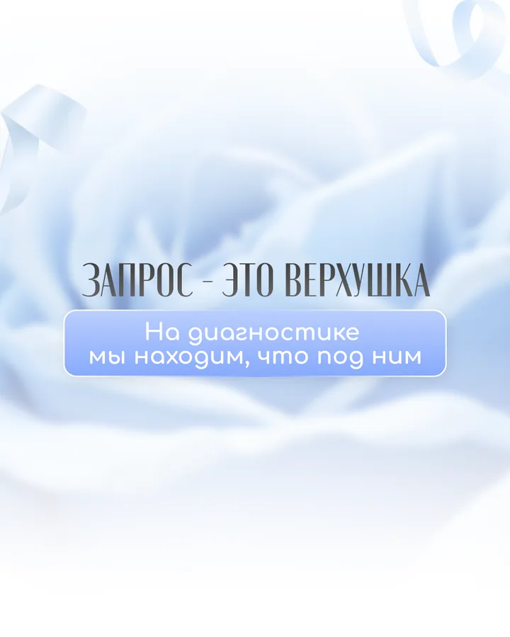
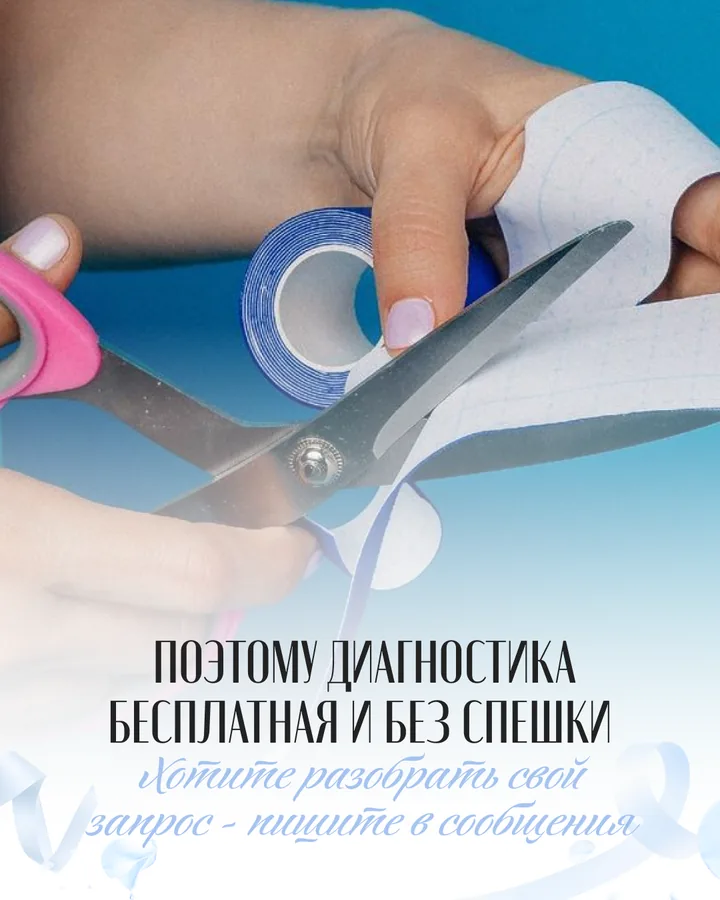
1 / 7

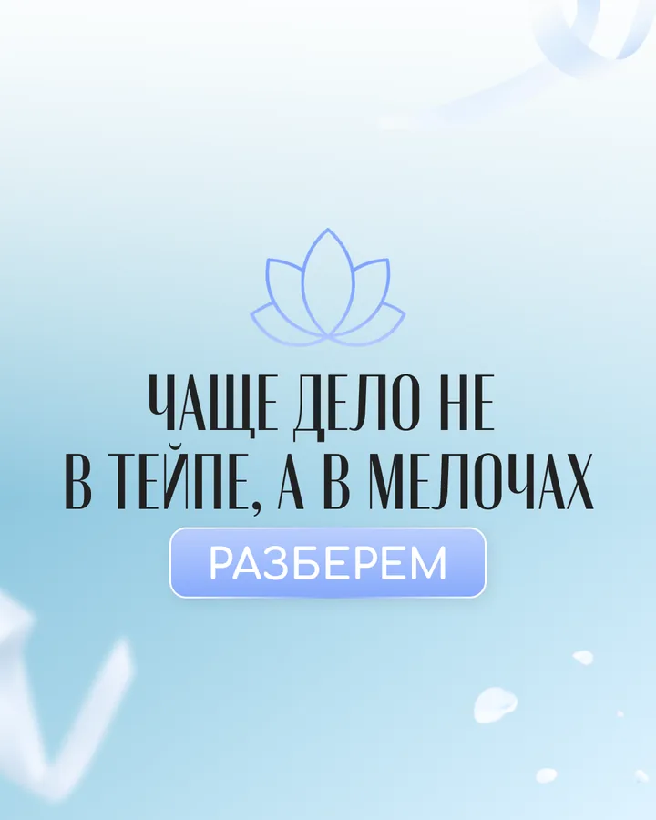
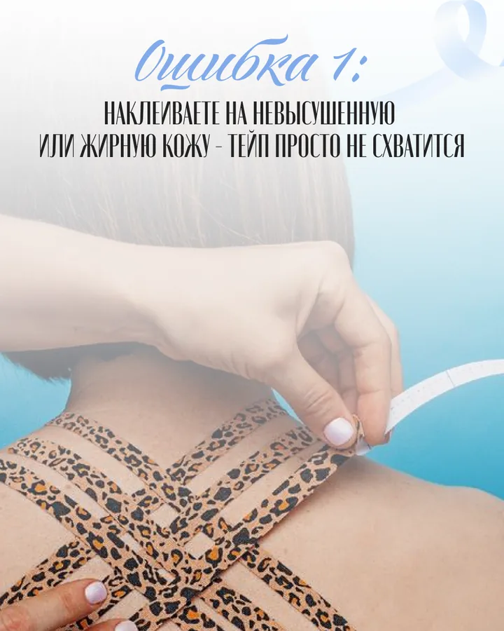
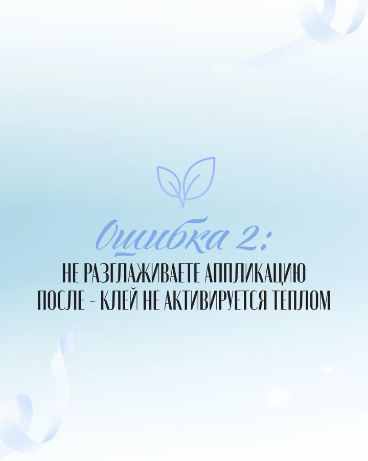
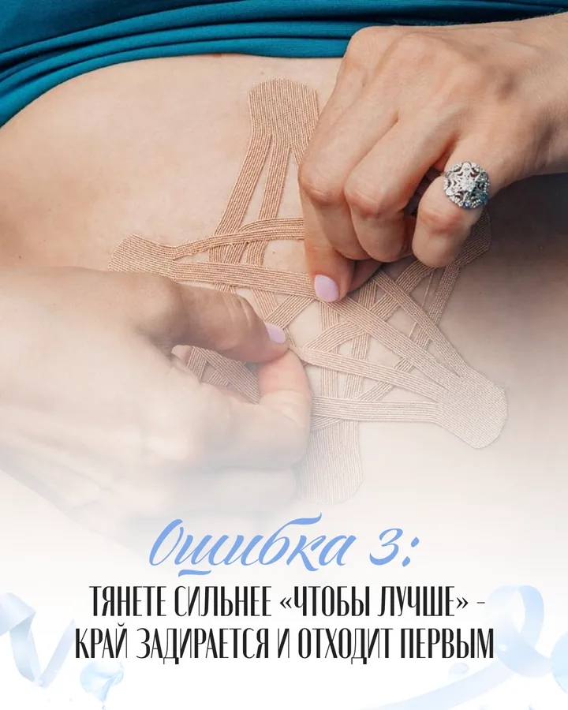
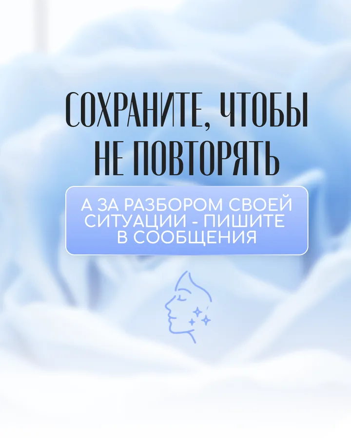
1 / 7
Готовый контент-план можно проверить целиком
В кейсе открыт сам продукт: публикации, карусели, сторис и логика выпуска.
10публикаций собраны
в одну систему
в одну систему
Что видно без пояснений менеджера
- СтратегияПубличное название клиента: BORODULINA TAPE.
- ПроизводствоФинальный пакет содержит 10 публикаций, включая две карусели по семь слайдов.
- ВыпускК первой публикации подготовлен прогрев из пяти сторис.
Что подтверждает этот кейс
Без подтвержденных данных не заявляем: продажи, заявки, выручка и окупаемость; рост охватов, подписчиков и вовлечённости.
10 готовых постови публикация на пяти площадках4 990 ₽
Маркетолог собирает план, команда пишет и оформляет, менеджер ведет согласование. Вы занимаетесь бизнесом.
Без скрытой доплаты за публикацию на подключенных площадках. Условия фиксируем до старта.